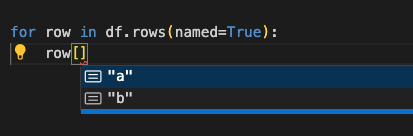

Polars on steroids!
This package provides a generic extension to Polars DataFrame, allowing data validation and typing goodies.
Features
- Generic DataFrame: Ensures type safety using Python's
TypedDict. - Data Validation: Checks that the DataFrame conforms to the expected schema.
- Custom Checks: Leverage the power of polars expression to add custom checks.
- Lightweight: No dependencies (except polars)!
Installation
Get Started
Defining a Schema
Schemas are defined using Python's TypedDict:
from typing import Annotated, TypedDict
from polaroids import DataFrame, Field
import polars as pl
class BasicSchema(TypedDict):
a: Annotated[int, Field(
sorted="ascending",
coerce=True,
unique=True,
checks=[lambda d: d.ge(0)],
)]
b: int | None
df = pl.DataFrame({"a": [0.0, 1.0], "b": [None, 0]})
DataFrame[BasicSchema](df).validate()
# shape: (2, 2)
# ┌─────┬──────┐
# │ a ┆ b │
# │ --- ┆ --- │
# │ i64 ┆ i64 │
# ╞═════╪══════╡
# │ 0 ┆ null │
# │ 1 ┆ 0 │
# └─────┴──────┘
Get typing goodies!
Get your TypedDict back when you leave polars ✅:
